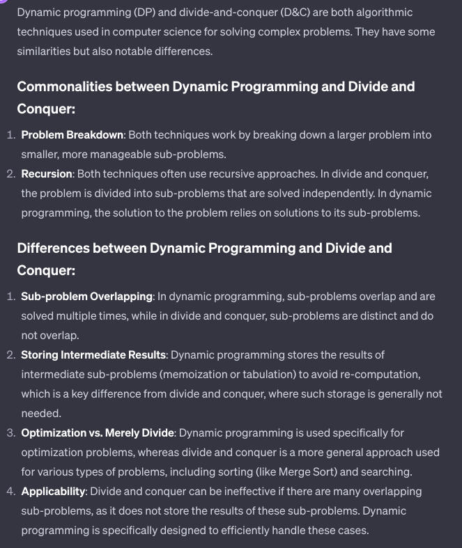

What does Dynamic Programming have common with Divide and conquer and what are the differences? Write a function that takes two parameters n and k and returns the value of Binomial Coefficient C(n, k) using dynamic programming

def binomial_coefficient(n, k):
# Create a temporary array to store intermediate results
C = [[0 for x in range(k + 1)] for x in range(n + 1)]
# Calculate the value of Binomial Coefficient in bottom-up manner
for i in range(n + 1):
for j in range(min(i, k) + 1):
# Base cases
if j == 0 or j == i:
C[i][j] = 1
# Calculate value using previously stored values
else:
C[i][j] = C[i-1][j-1] + C[i-1][j]
return C[n][k]